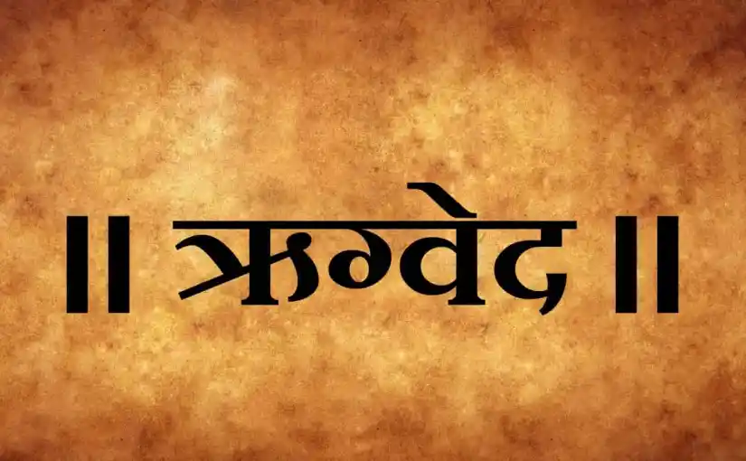

Vedas


Veda, (Sanskrit: “Knowledge”) a collection of poems or hymns composed in archaic Sanskrit by Indo-European-speaking peoples who lived in northwest India during the 2nd millennium BCE. No definite date can be ascribed to the composition of the Vedas, but the period of about 15001200 BCE is acceptable to most scholars. The hymns formed a liturgical body that in part grew up around the soma ritual and sacrifice and were recited or chanted during rituals. They praised a wide pantheon of gods, some of whom personified natural and cosmic phenomena, such as fire (Agni), the Sun (Surya and Savitri), dawn (Ushas, a goddess), storms (the Rudras), and rain (Indra), while others represented abstract qualities such as friendship (Mitra), moral authority (Varuna), kingship (Indra), and speech (Vach, a goddess). The foremost collection, or Samhita, of such poems, from which the hotri (“reciter”) drew the material for his recitations, is the Rigveda (“Knowledge of the Verses”). Sacred formulas known as mantras were recited by the adhvaryu, the priest responsible for the sacrificial fire and for carrying out the ceremony. Those mantras and verses were drawn into the Samhita known as the Yajurveda (“Knowledge of the Sacrifice”). A third group of priests, headed by the udgatri (“chanter”), performed melodic recitations linked to verses that were drawn almost entirely from the Rigveda but were arranged as a separate Samhita, the Samaveda (“Knowledge of the Chants”). Those three Vedas—Rig, Yajur, and Sama—were known as the trayi-vidya (“threefold knowledge”). A fourth collection of hymns, magic spells, and incantations is known as the Atharvaveda (“Knowledge of the Fire Priest”), which includes various local traditions and remains partly outside the Vedic sacrifice.
The Samaveda comprises two major parts. The first part include four melody collections (gāna, गान) and the second part three verse "books" (ārcika, आर्चिक). A melody in the song books corresponds to a verse in the arcika books.The Gana collection is subdivided into Gramageya and Aranyageya, while the Arcika portion is subdivided into Purvarcika and Uttararcika portions.The Purvarcika portion of the text has 585 single stanza verses and is organized in order of deities, while Uttararcika text is ordered by rituals.[16] The Gramageya melodies are those for public recitations, while Aranyageya melodies are for personal meditative use such as in the solitude of a forest.Typically, the Purvarcika collection were sung to melodies described in the Gramageya-Gānas index, and the rules of how the verses mapped to verses is described in the Sanskrit texts such as the Puspasutra. Just like Rigveda, the early sections of Samaveda typically begin with Agni and Indra hymns but shift to abstract speculations and philosophy, and their meters too shifts in a descending order. The later sections of the Samaveda, states Witzel, have least deviation from substance of hymns they derive from Rigveda into songs. The purpose of Samaveda was liturgical, and they were the repertoire of the udgātṛ or "singer" priests. The Samaveda, like other Vedas, contains several layers of text, with Samhita being the oldest and the Upanishads the youngest layer.
The Rigveda is the oldest known Vedic Sanskrit text.Its early layers are among the oldest extant texts in any Indo-European language.[8][note 2] The sounds and texts of the Rigveda have been orally transmitted since the 2nd millennium BCE.[10][11][12] Philological and linguistic evidence indicates that the bulk of the Rigveda Samhita was composed in the northwestern region of the Indian subcontinent (see) Rigvedic rivers), most likely between c. 1500 and 1000 BCE,[13][14][15] although a wider approximation of c. 1900–1200 BCE has also been given.[16][17][note 1] The text is layered, consisting of the Samhita, Brahmanas, Aranyakas and Upanishads.[note 3The Rigveda Samhita is the core text and is a collection of 10 books (maṇḍalas) with 1,028 hymns (sūktas) in about 10,600 verses (called ṛc, eponymous of the name Rigveda). In the eight books – Books 2 through 9– that were composed the earliest, the hymns predominantly discuss cosmology, rites, and rituals and praise deities.[18][19] The more recent books (Books 1 and 10) in part also deal with philosophical or speculative questions,[19] virtues such as dāna (charity) in society, questions about the origin of the universe and the nature of the divine,[21][22] and other metaphysical issues in their hymns.
The Yajurveda is broadly grouped into two – the "black" or "dark" (Krishna) Yajurveda and the "white" or "bright" (Shukla) Yajurveda. The term "black" implies "the un-arranged, unclear, motley collection" of verses in Yajurveda, in contrast to the "white" which implies the "well arranged, clear" Yajurveda.[5] The black Yajurveda has survived in four recensions, while two recensions of white Yajurveda have survived into the modern times.[6] The earliest and most ancient layer of Yajurveda samhita includes about 1,875 verses, that are distinct yet borrow and build upon the foundation of verses in Rigveda.[7][8] The middle layer includes the Satapatha Brahmana, one of the largest Brahmana texts in the Vedic collection.[9] The youngest layer of Yajurveda text includes the largest collection of primary Upanishads, influential to various schools of Hindu philosophy. These include the Brihadaranyaka Upanishad, the Isha Upanishad, the Taittiriya Upanishad, the Katha Upanishad, the Shvetashvatara Upanishad and the Maitri Upanishad.[10][11] Two of the oldest surviving manuscript copies of the Shukla Yajurveda sections have been discovered in Nepal and Western Tibet, and these are dated to the 12th-century CE.[12]
The Rigveda is the oldest known Vedic Sanskrit text.Its early layers are among the oldest extant texts in any Indo-European language. The sounds and texts of the Rigveda have been orally transmitted since the 2nd millennium BCE.Philological and linguistic evidence indicates that the bulk of the Rigveda Samhita was composed in the northwestern region of the Indian subcontinent (see) Rigvedic rivers), most likely between c. 1500 and 1000 BCE,although a wider approximation of c. BCE has also been given. The text is layered, consisting of the Samhita, Brahmanas, Aranyakas and Upanishads.[note 3] The Rigveda Samhita is the core text and is a collection of 10 books (maṇḍalas) with 1,028 hymns (sūktas) in about 10,600 verses (called ṛc, eponymous of the name Rigveda). In the eight books – Books 2 through 9 – that were composed the earliest, the hymns predominantly discuss cosmology, rites, and rituals and praise deities.The more recent books (Books 1 and 10) in part also deal with philosophical or speculative questions,virtues such as dāna (charity) in society, questions about the origin of the universe and the nature of the divine,[21][22] and other metaphysical issues in their hymns.
The Atharvaveda is dated by Flood at ca. 900 BCE,while Michael Witzel gives a dating at, or slightly after, c. 1200/1000 BCE. The ancient Indian tradition initially recognized only three Vedas.The Rigveda, the verse 3.12.9.1 of Taittiriya Brahmana, the verse 5.32-33 of Aitareya Brahmana and other Vedic era texts mention only three Vedas.The acceptance of the Atharvanas hymns and traditional folk practices was slow, and it was accepted as another Veda much later than the first three, by both orthodox and heterodox traditions of Indian philosophies. The early Buddhist Nikaya texts, for example, do not recognize Atharvaveda as the fourth Veda, and make references to only three Vedas.Olson states that the ultimate acceptance of Atharvaveda as the fourth Veda probably came in the 2nd half of the 1st millennium BCE. However, notes Max Muller, the hymns of Atharvaveda existed by the time Chandogya Upanishad was completed (~700 BCE), but were then referred to as "hymns of Atharvangirasah". Frits Staal states that the text may be a compilation of poetry and knowledge that developed in two different regions of ancient India, the Kuru region in northern India and the Pancalas region of eastern India.The former was home to Paippalāda, whose name was derived from the sacred fig tree named Pippala (Sanskrit: पिप्पल). This school's compositions were in the Rigvedic style.[8] The Pancalas region contributions came from composer-priests Angirasas and Bhargavas, whose style was unlike the metric Rigvedic composition, and their content included forms of medical sorcery. The Atharvaveda editions now known are a combination of their compositions.